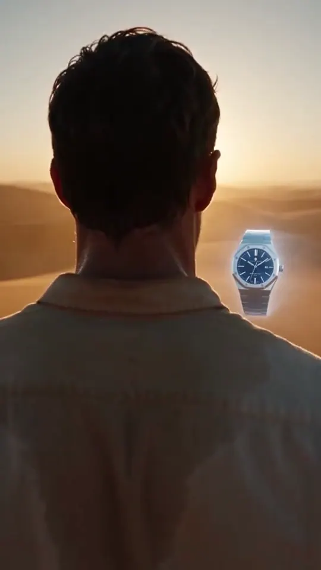

Produto em escala gigante
Uma ideia de lançamento para transformar a cidade em cenário.
Explore FOOH, UGC, comerciais e packshots com referência visual e direção de cena. Escolha uma ideia, adapte os campos disponíveis à sua marca e copie para a IA que você usa.
Créditos de geração de vídeo são contratados separadamente.

Um produto gigante atravessa lentamente a cidade, com reflexos e sombras integrados à rua.
Ver um prompt realMais repertório.
Menos página em branco.
Quatro formas de colocar um produto em cena: FOOH, conteúdo em estilo criador, comercial e packshot. Escolha um exemplo para assistir.
EXEMPLOS DE APLICAÇÃO · PLAY SOMENTE AO CLICARUma ideia de lançamento para transformar a cidade em cenário.

Conteúdo social para apresentar um produto com proximidade.

Uma narrativa visual para apresentar acessórios e valorizar o produto.

Luz e movimento para apresentar o produto em uma peça de marca.

Surpresa visual com um produto que ocupa o espaço urbano.

O impossível encontra uma cena do cotidiano.

Um contexto de uso simples para uma comunicação natural.

Um unboxing que apresenta o produto em poucos segundos.

Uma marca ganha protagonismo em uma cena urbana.
Exemplos de aplicação. O resultado varia conforme a ferramenta, o modelo e as referências utilizadas.
Prévias visuais, resumos e personalizador incluídos.

Comece com câmera, luz e ação já orientadas. Ajuste os campos disponíveis ao seu projeto e copie a sua versão para a ferramenta de vídeo com IA.
Prévias e resumos ajudam a encontrar uma ideia que faça sentido para o seu produto.
Defina marca, cor e contraste. Campos de produto, pessoa e ambiente aparecem nas cenas preparadas para isso.
Use busca, filtros, favoritos e vistos recentemente para encontrar e voltar às suas referências.
Personalize dentro do CRIA, sem cobrança extra pelo personalizador.
Explore as categorias e veja a referência.
Ajuste os detalhes disponíveis para o projeto.
Adicione suas referências, gere e refine.
Uma biblioteca visual para encontrar ideias, adaptar cenas e começar seus próximos vídeos com direção.
A biblioteca completa por
à vista · pagamento único
Acesso enviado por e-mail após a confirmação do pagamento.
Créditos e contas de ferramentas de IA são contratados separadamente.
Você tem 7 dias de garantia para conhecer o CRIA. Se não for para você, solicite o reembolso integral.
Prompts em inglês, prontos para copiar.
Para projetos próprios e de clientes, conforme as regras da ferramenta de IA.
Sem mensalidade do pack. Atualizações incluídas.
Abra um dos quatro cards para ler e copiar uma amostra real do pack. Na biblioteca completa, cada prompt tem prévia e resumo para você escolher com mais clareza.
Produtos gigantes. Ideias impossíveis. A cidade como cenário.
Ver um exemplo
Conteúdo próximo, demonstrações e situações de uso para marcas.
Ver um exemplo
Narrativa, textura e movimento para apresentar o que a marca faz.
Ver um exemplo
A embalagem, o detalhe e a luz assumem o protagonismo.
Ver um exemplo500 prompts no total. As capas mostram um frame de referência; a geração do vídeo acontece na ferramenta de IA escolhida.

Trabalho com conteúdo visual, efeitos e inteligência artificial. Organizei o CRIA para reunir ideias com direção de câmera, luz e ação em uma biblioteca que você pode explorar e adaptar ao seu trabalho.
Conheça meu trabalhoConfira o que está incluído e como usar os prompts antes de escolher seu acesso.
Falar com o suporteAcesso à biblioteca com 500 prompts de vídeo em 18 categorias, uma prévia visual e um resumo por prompt, personalizador, busca, filtros, favoritos e histórico recente. Você escolhe uma ideia, abre o prompt e copia para usar na sua ferramenta de IA.
O CRIA é uma biblioteca de prompts. A geração acontece na ferramenta de vídeo com IA que você escolher. Contas, assinaturas e créditos dessas ferramentas são contratados separadamente e não estão incluídos no valor do pack.
Todos os prompts foram adaptados para vídeos de até 15 segundos; alguns loops são mais curtos. São 350 prompts em 9:16 e 150 em 16:9. O formato horizontal fica nas categorias Cinematic pessoa, Animação & fantasia, Atmosférico & sci-fi, Drone & aerial, Microcinema & curta e Esporte & ação.
Você ajusta os campos preparados em cada cena, como marca, acabamento de cor e contraste. Algumas cenas também oferecem campos de produto, pessoa, ambiente ou outros detalhes. A personalização está incluída no CRIA. Você pode copiar sua versão ou restaurar o texto original; a geração do vídeo acontece na ferramenta de IA escolhida.
A interface e os resumos estão em português. Os prompts são escritos em inglês, com instruções de diálogo em português brasileiro quando a cena pede. Todos os 40 prompts de FOOH são sem falas, narração, vozes ao fundo ou canto.
As capas são referências de um único frame para ajudar a entender a ideia. Os vídeos desta página são exemplos de aplicação e não correspondem necessariamente a cada capa. O resultado varia conforme a IA, o modelo, os parâmetros e as referências utilizadas. Não há promessa de reprodução idêntica.
Depende da cena e da ferramenta escolhida. Quando o prompt pede uma referência, use uma imagem nítida do produto, pessoa ou embalagem e confira como sua IA aceita esse material. Para trabalhos de marca, revise a fidelidade da embalagem, logotipos e detalhes antes de publicar.
Sim. Você pode usar os prompts em projetos pessoais e profissionais, inclusive para clientes. Confira também as regras de uso comercial da ferramenta de IA escolhida e os direitos sobre marcas, pessoas, músicas e materiais de referência. O acesso à biblioteca é individual.
Depois da confirmação do pagamento na Kiwify, você recebe as instruções de acesso pelo e-mail informado na compra. A compra do CRIA é única, sem mensalidade do pack, e inclui as atualizações. As condições de parcelamento são exibidas no checkout.
Você tem 7 dias de garantia para conhecer o material. Se quiser solicitar o reembolso nesse prazo, use as instruções da compra na Kiwify ou entre em contato com o suporte. A devolução é integral, conforme a garantia da oferta.
Cadastre seus contatos para liberar o cupom do CRIA.
R$47 · compra única · 7 dias de garantia
Um produto gigante atravessa lentamente a cidade, com reflexos e sombras integrados à rua.
Referência para gerar: Foto nítida do produto, incluindo embalagem e proporções.
Anexe uma foto nítida de uma lata, caixa, frasco ou outro produto na sua IA de vídeo e cole o prompt abaixo. A cena não depende de marca ou cidade específicas.
CRIA / VIDEO DIRECTION — PRODUTO ATRAVESSANDO A CIDADE DELIVERY 15-second finished video, 9:16, 24fps delivery unless the sequence explicitly calls for time-lapse or slow motion. Timings describe the finished edit. If the selected generator supports shorter clips, generate each timed shot separately with the same references, then assemble the edit; do not cram the full narrative into one unsupported generation. FRAME COMPOSITION: Native vertical 9:16 video. Compose every shot for the portrait frame, keeping the subject and essential action inside the central safe area with clear space above and below. Reframe lateral reveals and groups for vertical readability; no horizontal canvas, pillarboxing or letterboxing. REFERENCES @image1 = Produto. Foto nítida do produto, incluindo embalagem e proporções. Preserve reference identity, proportions, colors and materials, except for the one intentional effect explicitly described in the sequence. If the generator uses attachment slots instead of @image tokens, attach the same references in that order. DIRECTION & CINEMATOGRAPHY 32mm grounded tracking, consistent afternoon sun; replace the long aerial descent with an immediate street-level setup. ARRI Alexa 35 visual language for normal-speed live action: organic highlight roll-off, natural skin and material texture, restrained sharpening, believable motion blur and controlled contrast. A named camera is an aesthetic reference, not a promise of actual capture. Use a dedicated high-speed-imaging look for slow-motion inserts rather than attributing unsupported frame rates to Alexa. SEQUENCE [0–4s] A street-level wide already shows the giant reference product approaching through a broad empty urban corridor. [4–10s] Track a short section of its slow passage between buildings; reflections, shadow and nearby air displacement follow the same direction. [10–15s] The product stops at the clear intersection and the camera ends on a stable low-angle hero with people on distant sidewalks for scale. VFX & CONTINUITY Houdini-level finish where effects are needed: stable camera tracking, correct occlusion, grounded contact, coherent light direction, reflections and shadows. Couple rigid bodies, cloth, particles, smoke and fluids only when the scene calls for them. Respect mass, momentum and material response around the explicitly fictional event. Do not apply generic glow to every object. AUDIO Low product-movement rumble, displaced air and distant city traffic. NO VOCAL CONTENT: No dialogue, narration, voice-over, background speech, crowd voices, singing or vocal reactions. Use only the stated non-vocal environmental ambience and sound effects. If audio is unsupported, produce only those effects separately in post. Do not add a spoken language or spoken line. FINISH & RESTRICTIONS Keep subject count, spatial geography, light direction and object ownership consistent. No identity drift, extra fingers, duplicate objects, intersecting surfaces, unmotivated morphs, watermark or burned-in subtitles. Exact lettering, interfaces and planned overlays are composited in post rather than hallucinated by the video model. Preserve any intentional text-based story device in the edit.
A capa é uma referência visual de um frame. Use o prompt na sua ferramenta de IA, com as referências indicadas. O resultado depende do modelo e dos ajustes.
Uma criadora encontra um acessório num organizador aberto, com o produto visível sobre a bancada.
Referência para gerar: Foto nítida do produto real e da embalagem; inclua os componentes usados na cena.
CRIA / VIDEO DIRECTION — UGC — SOLUÇÃO PARA A GAVETA PERDIDA DELIVERY 15-second finished video, 9:16, 24fps delivery. Hard maximum duration: 15 seconds. Timings refer to the finished edit, not recording frame rate. Keep actions readable at natural speed; use explicit cuts for different angles or compressed time. If a tool supports only shorter clips, generate matched shots and assemble them within the stated total duration. FRAME COMPOSITION: Native vertical 9:16 video. Compose every shot for the portrait frame, keeping the subject and essential action inside the central safe area with clear space above and below. Reframe lateral reveals and groups for vertical readability; no horizontal canvas, pillarboxing or letterboxing. REFERENCES @image1 = Produto. Foto nítida do produto real e da embalagem; inclua os componentes usados na cena. Preserve reference identity, proportions, colors and materials, except for the one intentional effect explicitly described in the sequence. If the generator uses attachment slots instead of @image tokens, attach the same references in that order. BRAND ADAPTATION: Use the actual supplied product and permitted function. Adapt the set palette, styling and verified campaign copy to the brand. Exact packaging graphics, prices, dates and offer text are composited in post when necessary; do not invent product variants, features or results. DIRECTION & CINEMATOGRAPHY Fixed smartphone overhead, window light; preserve all object counts and show the organizer's real compartment sizes. Authentic smartphone visual language, 24fps delivery, natural exposure and white balance. Keep real skin texture and modest handheld imperfections; do not add cinematic camera movement that contradicts the creator-led setup. SEQUENCE [0–4s] Start with an overhead phone shot of one cluttered drawer and the creator briefly searching for a small everyday accessory. [4–10s] A direct cut shows the same objects placed into the actual reference organizer; the creator retrieves the accessory in one clear movement. [10–15s] Hold the open organizer and say in Brazilian Portuguese: "Agora eu sei onde está." Keep this a staged demonstration, not a claimed customer history. VFX & CONTINUITY Keep hand/object contact, anatomy, reflections and environmental interaction coherent. Any cleanup or compositing must preserve the observational feel; no floating contact points, duplicated limbs, unstable faces or textures crawling between frames. Each contact must have a clear approach and settling phase. Preserve geography through direct cuts; do not turn editing time compression into impossible real-time travel. AUDIO Drawer slide, small object contact and the specified short spoken line; no music required. Any specified speech is Brazilian Portuguese. If audio is unsupported, create the stated Foley and dialogue separately in post; never extend the final video past 15 seconds to fit speech. FINISH & RESTRICTIONS Keep subject count, spatial geography, light direction and object ownership consistent. No identity drift, extra fingers, duplicate objects, intersecting surfaces, unmotivated morphs, watermark or burned-in subtitles. Exact lettering, interfaces and planned overlays are composited in post rather than hallucinated by the video model. Preserve any intentional text-based story device in the edit. Demonstrate only the actual product function. Populate editable claims and results with verified information; the generated example is a creative reference, not evidence of a real test or testimonial.
A capa é uma referência visual de um frame. Use o prompt na sua ferramenta de IA, com as referências indicadas. O resultado depende do modelo e dos ajustes.
Um perfume sobre pedra, sombra de uma folha atravessando o frasco.
Referência para gerar: Foto nítida do produto e de sua embalagem real.
CRIA / VIDEO DIRECTION — PERFUME — SOMBRA EM MOVIMENTO DELIVERY 15-second finished video, 9:16, 24fps delivery. The timing describes the final edit; use separate matched clips when the selected generator has a shorter duration limit. Time-lapse compresses the stated real-world interval; slow motion is a dedicated high-speed-imaging treatment. FRAME COMPOSITION: Native vertical 9:16 video. Compose every shot for the portrait frame, keeping the subject and essential action inside the central safe area with clear space above and below. Reframe lateral reveals and groups for vertical readability; no horizontal canvas, pillarboxing or letterboxing. REFERENCES @image1 = Produto. Foto nítida do produto e de sua embalagem real. Preserve reference identity, proportions, colors and materials, except for the one intentional effect explicitly described in the sequence. If the generator uses attachment slots instead of @image tokens, attach the same references in that order. DIRECTION & CINEMATOGRAPHY ARRI Alexa 35 look, 75mm, hard sunlight-style source through a real leaf, restrained cool fill and accurate glass caustics. ARRI Alexa 35 visual language for normal-speed live action: organic highlight roll-off, natural skin and material texture, restrained sharpening, believable motion blur and controlled contrast. A named camera is an aesthetic reference, not a promise of actual capture. Use a dedicated high-speed-imaging look for slow-motion inserts rather than attributing unsupported frame rates to Alexa. SEQUENCE [0–4s] The product stands still in a deep charcoal studio; a leaf shadow begins outside its silhouette. [4–10s] A physical leaf moves slowly through the key light, casting a changing shadow across the bottle while its glass remains optically clear. [10–15s] The shadow clears the front label and the camera finishes a short lateral slide into the hero composition. VFX & CONTINUITY Houdini-level finish where effects are needed: stable camera tracking, correct occlusion, grounded contact, coherent light direction, reflections and shadows. Couple rigid bodies, cloth, particles, smoke and fluids only when the scene calls for them. Respect mass, momentum and material response around the explicitly fictional event. Do not apply generic glow to every object. Give each action time to begin, make contact and settle. Use direct cuts for an explicitly different angle or compressed time; keep a continuous shot only where the camera path and geography permit it. AUDIO Quiet studio air and faint foliage movement; no music. Dialogue is Brazilian Portuguese only where a spoken line is specified. Keep each line within its shot duration. If sound is unsupported by the chosen tool, produce the stated Foley and dialogue separately in post. FINISH & RESTRICTIONS Keep subject count, spatial geography, light direction and object ownership consistent. No identity drift, extra fingers, duplicate objects, intersecting surfaces, unmotivated morphs, watermark or burned-in subtitles. Exact lettering, interfaces and planned overlays are composited in post rather than hallucinated by the video model. Preserve any intentional text-based story device in the edit.
A capa é uma referência visual de um frame. Use o prompt na sua ferramenta de IA, com as referências indicadas. O resultado depende do modelo e dos ajustes.
Um frasco de cosmético permanece imóvel enquanto reflexos de água percorrem uma base de cerâmica.
Referência para gerar: Foto nítida do produto real e da embalagem; inclua os componentes usados na cena.
CRIA / VIDEO DIRECTION — LOOP — CÁUSTICAS NA CERÂMICA DELIVERY 8-second seamless loop, 9:16, 24fps delivery. Hard maximum duration: 15 seconds. Timings refer to the finished edit, not recording frame rate. Keep actions readable at natural speed; use explicit cuts for different angles or compressed time. If a tool supports only shorter clips, generate matched shots and assemble them within the stated total duration. FRAME COMPOSITION: Native vertical 9:16 video. Compose every shot for the portrait frame, keeping the subject and essential action inside the central safe area with clear space above and below. Reframe lateral reveals and groups for vertical readability; no horizontal canvas, pillarboxing or letterboxing. REFERENCES @image1 = Produto. Foto nítida do produto real e da embalagem; inclua os componentes usados na cena. Preserve reference identity, proportions, colors and materials, except for the one intentional effect explicitly described in the sequence. If the generator uses attachment slots instead of @image tokens, attach the same references in that order. BRAND ADAPTATION: Use the actual supplied product and permitted function. Adapt the set palette, styling and verified campaign copy to the brand. Exact packaging graphics, prices, dates and offer text are composited in post when necessary; do not invent product variants, features or results. DIRECTION & CINEMATOGRAPHY 85mm locked studio camera, soft key plus one controlled caustic source; one eight-second seamless cycle. ARRI Alexa 35 visual language for normal-speed live action: organic highlight roll-off, natural skin and material texture, restrained sharpening, believable motion blur and controlled contrast. A named camera is an aesthetic reference, not a promise of actual capture. Use a dedicated high-speed-imaging look for slow-motion inserts rather than attributing unsupported frame rates to Alexa. SEQUENCE [0–8s] Lock the reference product on a matte ceramic base, centered and label facing forward. Over one eight-second period, a motorized rippled glass gobo rotates a full turn above the light, creating periodic caustics around the product. Return exactly to the initial gobo angle and light phase; the product never rotates or crossfades. VFX & CONTINUITY Houdini-level finish where effects are needed: stable camera tracking, correct occlusion, grounded contact, coherent light direction, reflections and shadows. Couple rigid bodies, cloth, particles, smoke and fluids only when the scene calls for them. Respect mass, momentum and material response around the explicitly fictional event. Do not apply generic glow to every object. Match camera, light, position and velocity at the cycle boundary. Deliver one period without a duplicated final frame. Do not conceal a seam with a product crossfade. AUDIO Silent loop. Keep the entire loop silent. FINISH & RESTRICTIONS Keep subject count, spatial geography, light direction and object ownership consistent. No identity drift, extra fingers, duplicate objects, intersecting surfaces, unmotivated morphs, watermark or burned-in subtitles. Exact lettering, interfaces and planned overlays are composited in post rather than hallucinated by the video model. Preserve any intentional text-based story device in the edit.
A capa é uma referência visual de um frame. Use o prompt na sua ferramenta de IA, com as referências indicadas. O resultado depende do modelo e dos ajustes.